6G / IMT-2030 · STATUS: OCTOBER 2026
6G and IMT-2030 Study Guide
A visual guide for telecom engineers: IMT-2030, spectrum, air interface, AI, sensing, satellites and the road to 2030.
Prefer to read offline?
The complete guide as one PDF: 75 pages, 5.6 MB. The earlier text-only notes are still available here.
Note: 6G is not standardised yet. This guide describes the vision, the studies and the working agreements as of October 2026. Details will change until 3GPP Release 21 is complete.
1. What 6G Is, and What It Is Not
The names, the players, the lessons from 5G and where things stand in October 2026.
1.1Two names for one thing
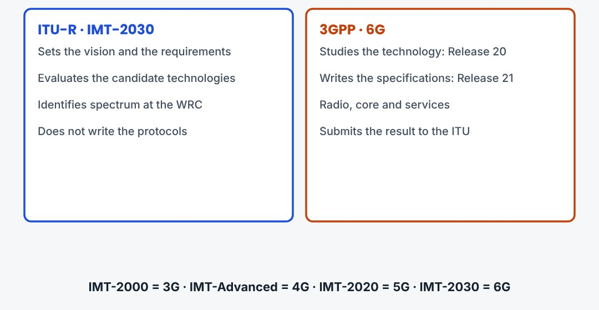
6G has two official names. The ITU calls it IMT-2030 and defines what it should be able to do. 3GPP writes the actual technical specifications and will introduce 6G in Release 21. A technology becomes 6G when 3GPP submits it to the ITU and the ITU accepts it as IMT-2030.
1.2A generation every ten years
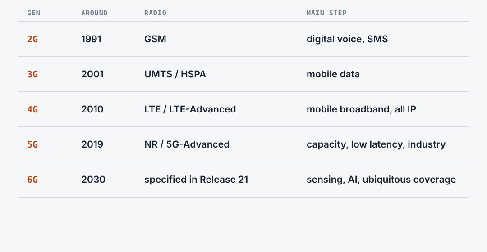
Mobile generations have arrived about every ten years. Each one is remembered for one main step. 6G is planned for commercial launch around 2030. Inside each generation the technology keeps evolving: 5G-Advanced, Releases 18 to 20, is the bridge to 6G.
1.3What is new compared with 5G
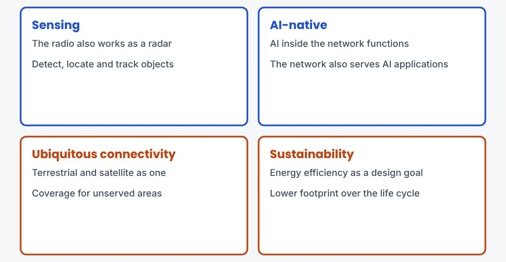
5G improved speed, latency and device density. 6G keeps improving those and adds capabilities that are new for a mobile network. The network should sense its surroundings, use AI as a built-in part, reach every place including through satellites, and do all that with less energy.
1.4What 6G is not
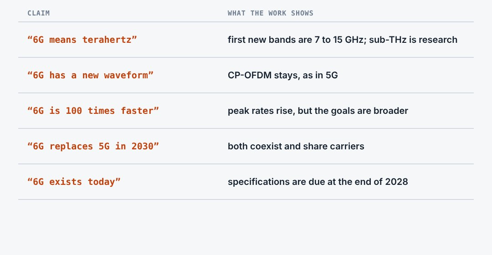
Several popular claims do not match what is being standardised. 6G is not mainly a terahertz technology: the first focus is on bands between 7 and 15 GHz. It is not a completely new radio: it keeps OFDM. And it will not replace 5G overnight. Both will share spectrum for years.
1.5Who does what
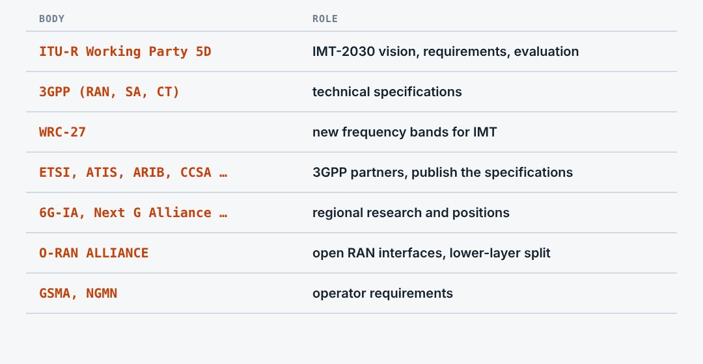
Many organisations shape 6G. The ITU-R sets the frame. 3GPP specifies. The World Radiocommunication Conference decides on spectrum. Regional research programmes and industry alliances feed ideas into them, and the O-RAN ALLIANCE defines open interfaces inside the radio network.
1.6Lessons taken from 5G
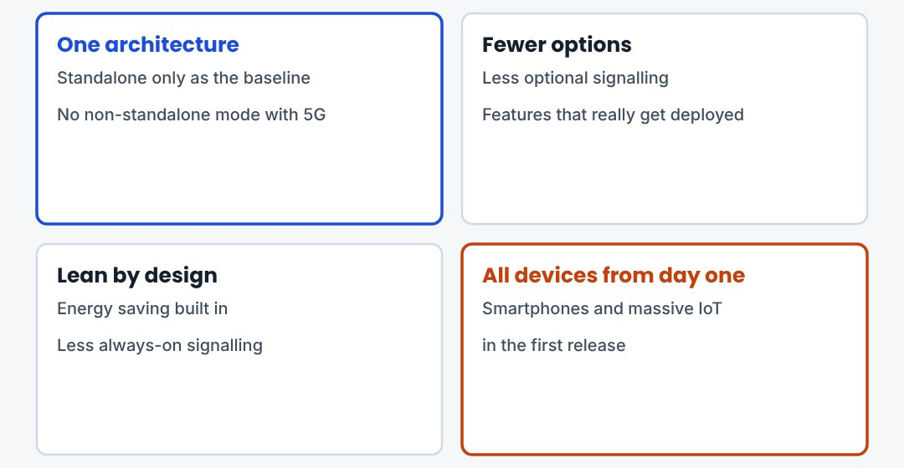
The industry wants to avoid some 5G experiences. 5G was specified with many architecture options, which split the market and delayed standalone networks. For 6G the baseline is one option: standalone, with no dual connectivity to 5G. Other lessons are fewer optional features, energy saving from the start, and simple devices from the first release.
1.7Where things stand: October 2026
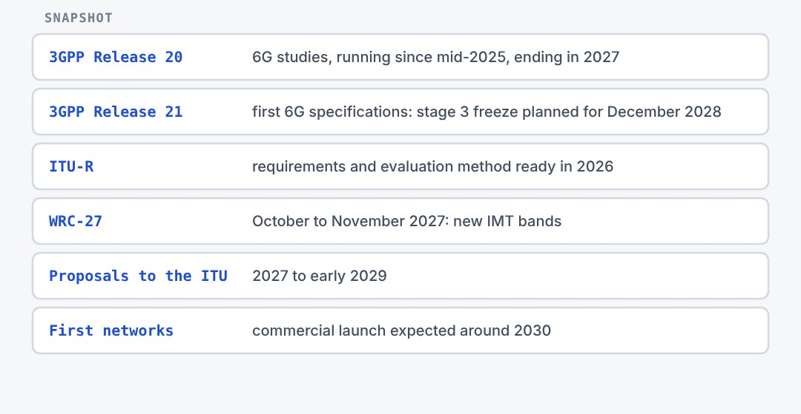
3GPP is in the study phase. The radio group has made first choices: OFDM waveform, reuse of the 5G channel codes, carriers from 3 to 400 MHz. The ITU has finished its requirements. The spectrum decision comes at WRC-27, the first 6G specifications at the end of 2028.
1.8Three things to remember
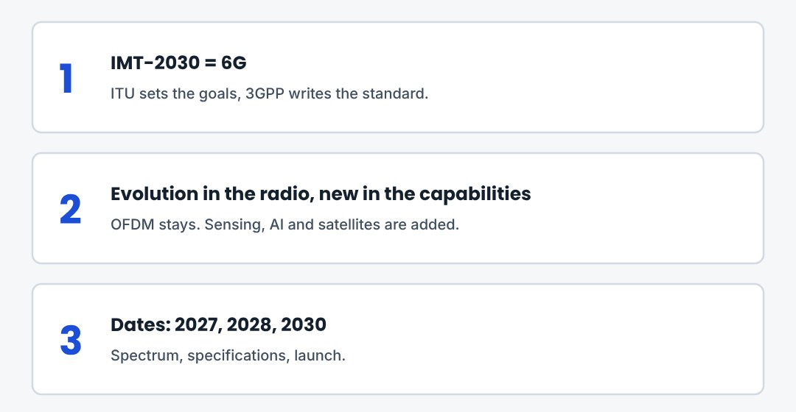
IMT-2030 is the requirement, 3GPP Release 21 the specification. 6G adds sensing, AI and ubiquitous coverage to better broadband. Nothing is final before the end of 2028.
2. IMT-2030: Scenarios and Capabilities
What the ITU expects from 6G: six usage scenarios, the capability targets and how candidates are evaluated.
2.1Six usage scenarios
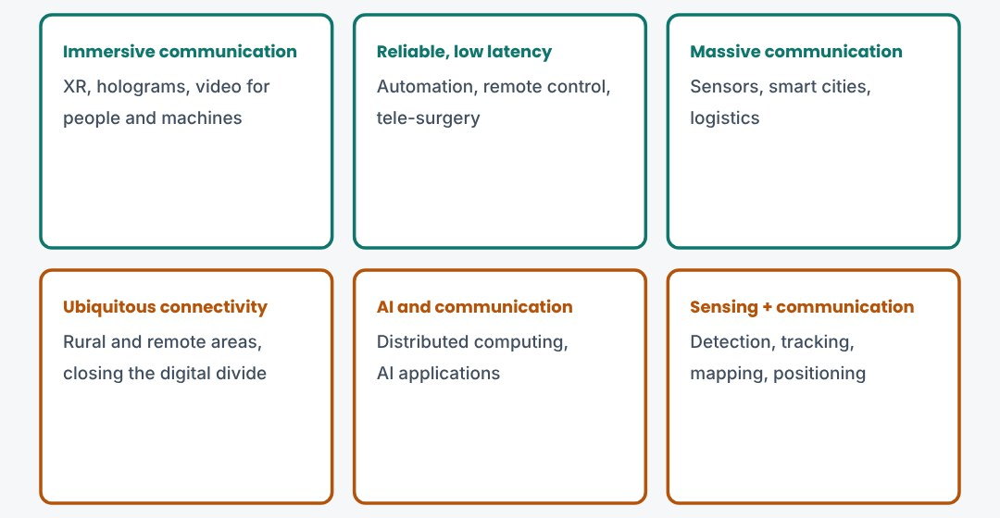
IMT-2020 had three usage scenarios. IMT-2030 has six. Three extend the 5G ones: immersive communication, hyper reliable and low-latency communication, and massive communication. Three are new: ubiquitous connectivity, AI and communication, and integrated sensing and communication.
2.2From the triangle to the hexagon
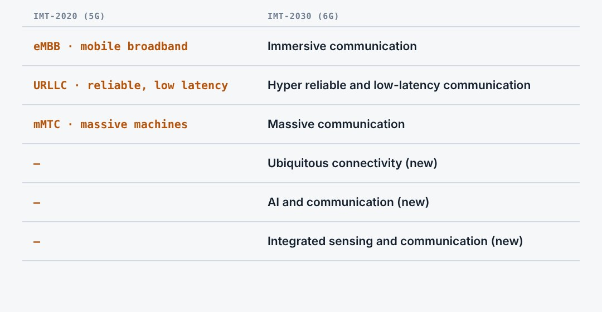
The three IMT-2020 scenarios formed a triangle. Each corner now has a successor with stronger requirements, and three new scenarios sit between them. The new ones come from combining communication with something else: wider coverage, computing and AI, or sensing.
2.3Four principles around the scenarios
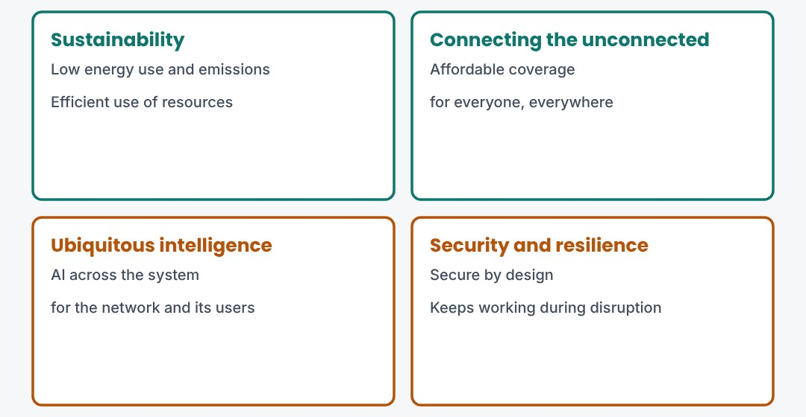
The ITU places four overarching aspects around all six scenarios. They are design principles that apply to everything 6G does. They are not features to be added later but conditions every solution has to meet.
2.4Capabilities carried over from 5G
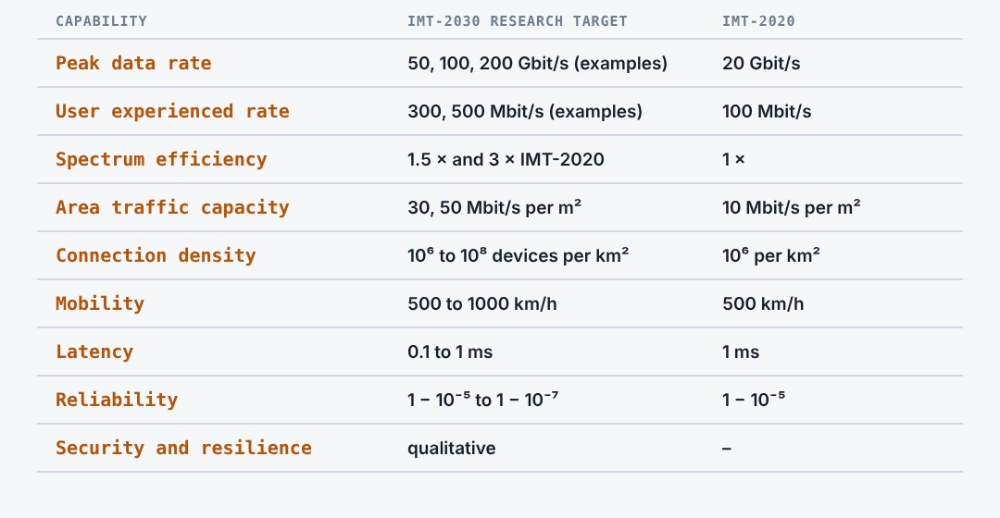
Nine capabilities continue from IMT-2020 with higher goals. The ITU gives them as ranges or example values for research, not as fixed requirements. The values depend on the scenario: no single deployment must reach all of them at once.
2.5Capabilities that are new
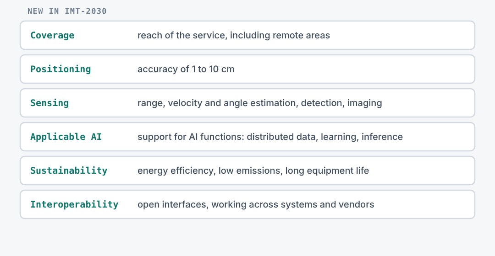
Six capabilities are new in IMT-2030. Some have numbers, such as a positioning accuracy of 1 to 10 cm. Others are described in words, because agreed metrics do not exist yet. Defining how to measure them is part of the work.
2.6From capabilities to requirements
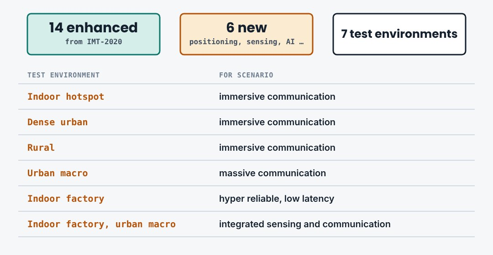
The framework gives directions. The next step turns them into technical performance requirements with exact values and test conditions. The ITU agreed 20 of them in 2026: 14 that continue from 5G in stronger form and 6 new ones. Each is checked in defined test environments.
2.7The IMT-2030 process
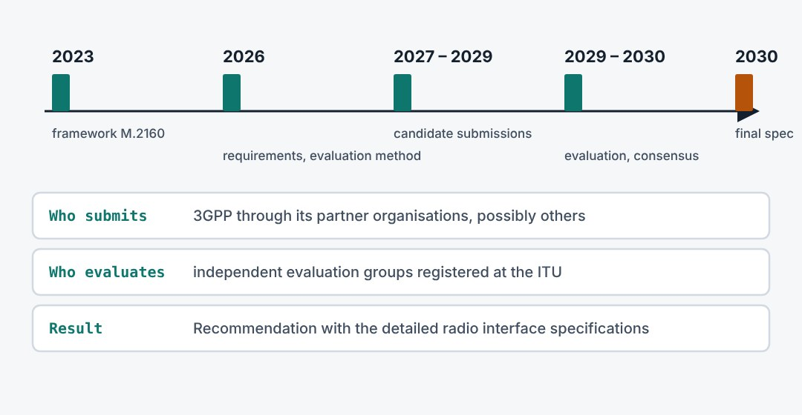
The ITU process runs in phases. The framework came in 2023 and the requirements in 2026. From 2027 standards bodies can submit candidate technologies. Independent groups evaluate them against the requirements. The detailed IMT-2030 specifications are planned for 2030.
2.8Three things to remember
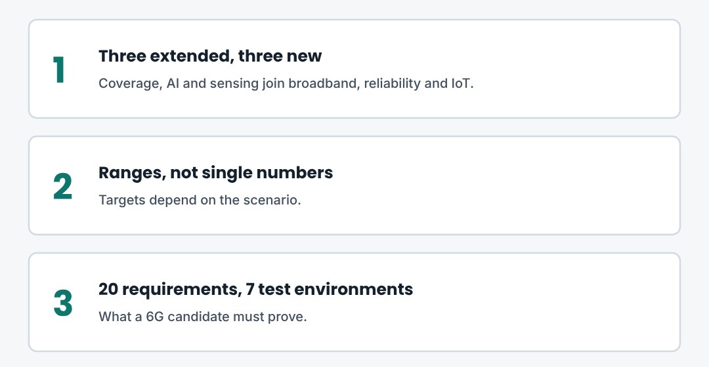
Six scenarios, three of them new. Capabilities are research targets, not promises. The binding requirements were agreed in 2026.
3. Spectrum for 6G
Which frequencies 6G will use: existing bands, the new 7 to 15 GHz range, and sub-terahertz.
3.1Layers of spectrum
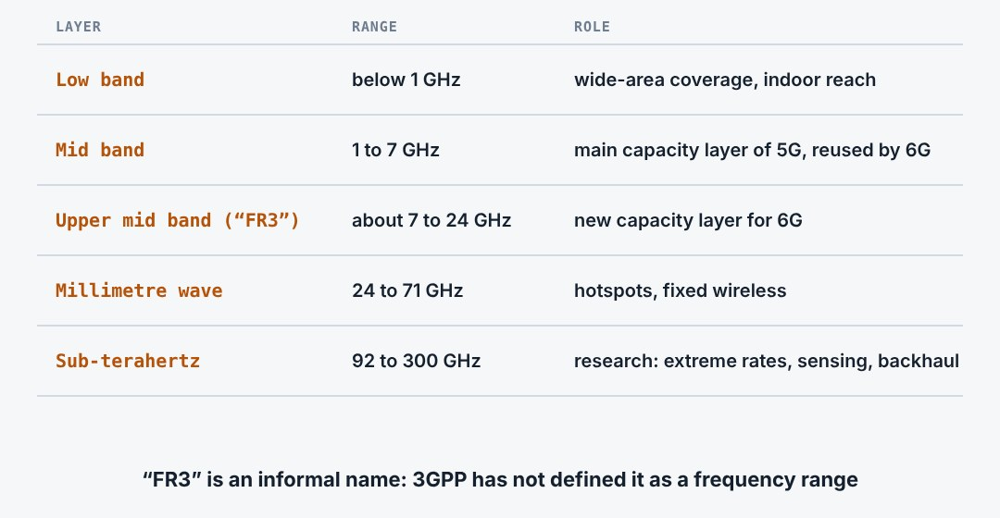
No single band can do everything. Low bands travel far and enter buildings. Mid bands balance coverage and capacity. High bands offer wide channels over short distances. 6G will use all layers, and add a new one between the 5G mid band and millimetre wave.
3.2The bands on the WRC-27 agenda
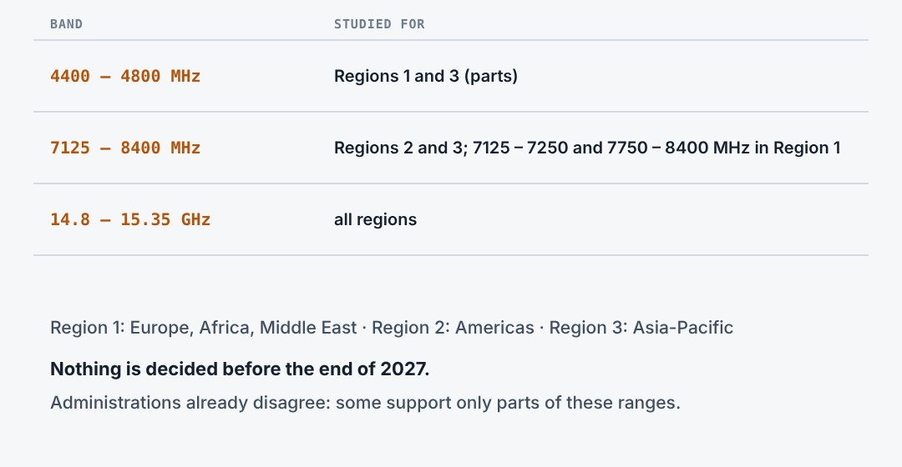
Agenda item 1.7 of the 2027 World Radiocommunication Conference studies new bands for IMT. Three ranges are on the table. They are used today by satellites, military systems and fixed links, so sharing studies decide the outcome. The conference takes place in Shanghai from October 2027.
3.3Why 7 to 15 GHz
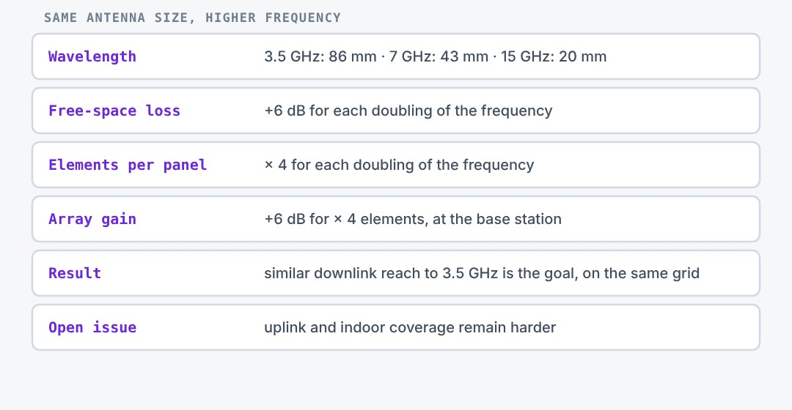
This range has two advantages. There is room for carriers of several hundred megahertz. And the wavelength is short enough to fit many more antenna elements into the same panel size. The extra array gain can offset the higher path loss, so operators hope to reuse their existing mid-band sites.
3.4The upper 6 GHz band
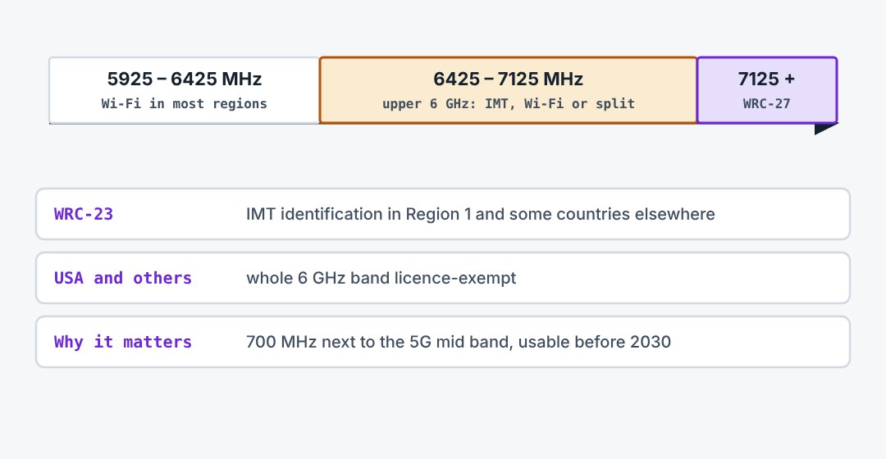
The band from 6425 to 7125 MHz is the nearest new mid-band spectrum. WRC-23 identified it for IMT in Region 1 and in several countries of the other regions. Elsewhere it is used or planned for Wi-Fi. Regulators handle it differently, and some split the band between the two.
3.5Sub-terahertz
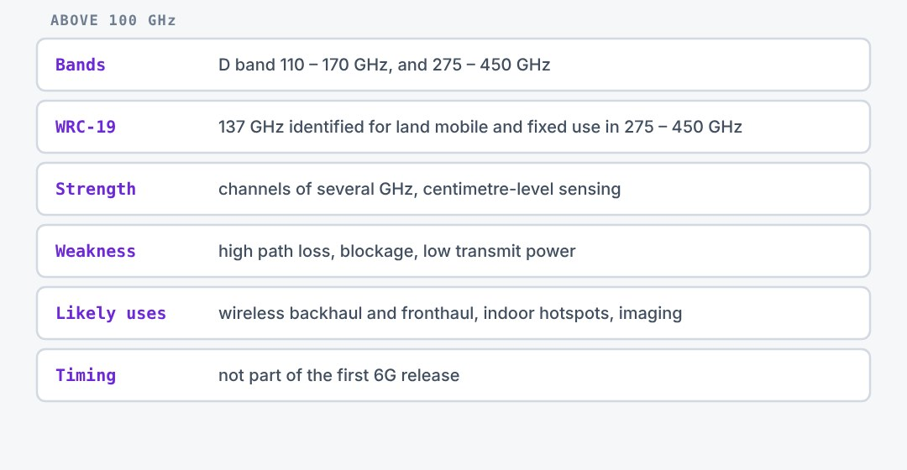
Above 100 GHz there are tens of gigahertz of spectrum. That allows very high rates and very fine sensing resolution. But the range is short, the signal is blocked easily and the hardware is immature. It is therefore expected in later 6G releases, for hotspots, backhaul and sensing, not for wide-area coverage.
3.6Sharing spectrum with 5G
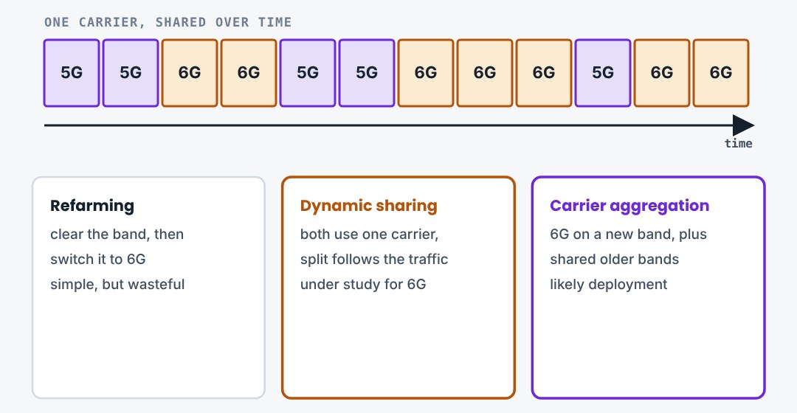
Most 6G traffic will at first run in bands that 5G uses today. Clearing a band for the new generation would waste capacity. 3GPP therefore studies how a 5G and a 6G carrier can share the same frequencies dynamically, with less overhead than the LTE and NR sharing of the past.
3.7Sharing with other services
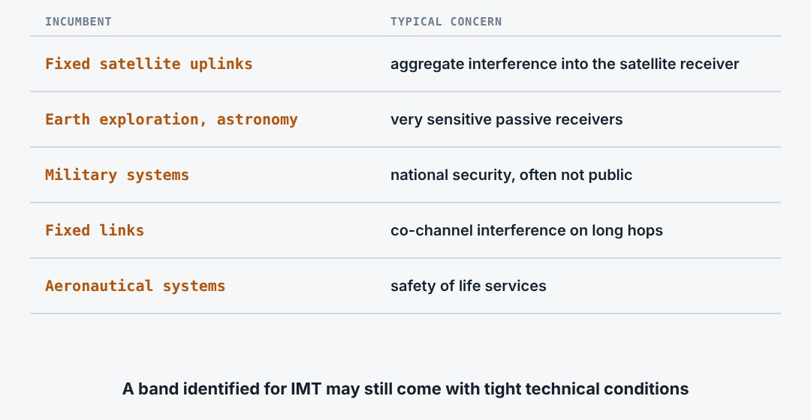
Almost all candidate bands have existing users. Whether 6G can enter depends on coexistence studies. Typical measures are power limits, limits on emissions towards the sky, exclusion zones and databases that coordinate use. These conditions shape the real value of a band as much as its width.
3.8Three things to remember
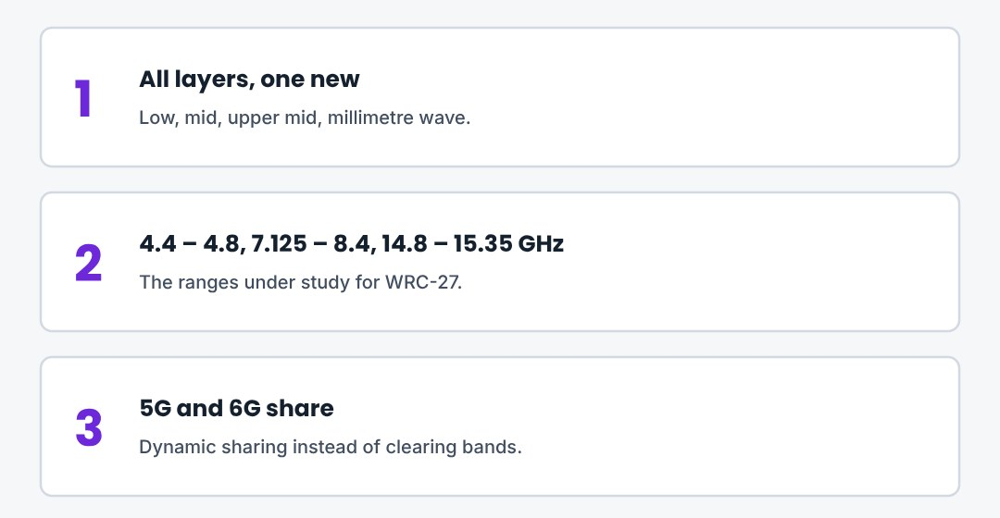
6G starts in today’s bands plus a new layer around 7 to 15 GHz. WRC-27 decides which parts. Sub-terahertz comes later.
4. The 6G Air Interface
What has been agreed for the radio so far, and the research directions around antennas, duplexing and energy.
4.1First decisions in 3GPP
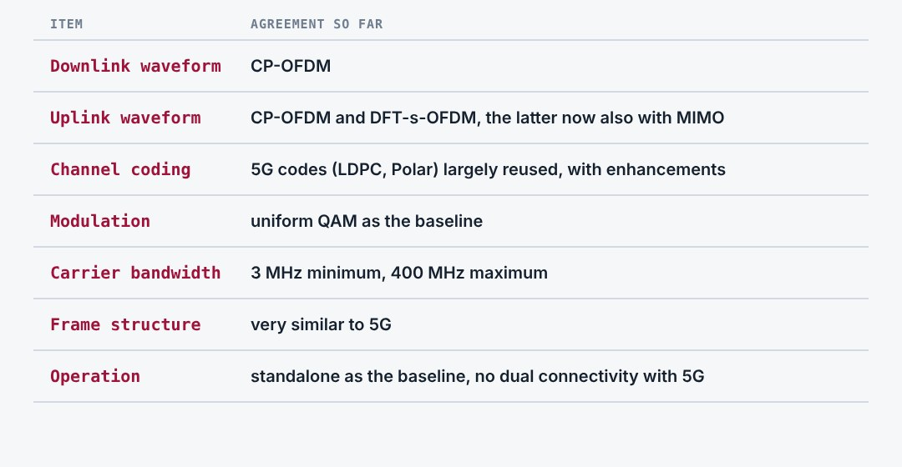
By mid-2026 the radio group had fixed the basics. The waveform stays OFDM. The 5G channel codes are largely reused. Carriers can be from 3 to 400 MHz wide. These are working agreements of the study phase. They become binding only when Release 21 is written.
4.2Why OFDM stays
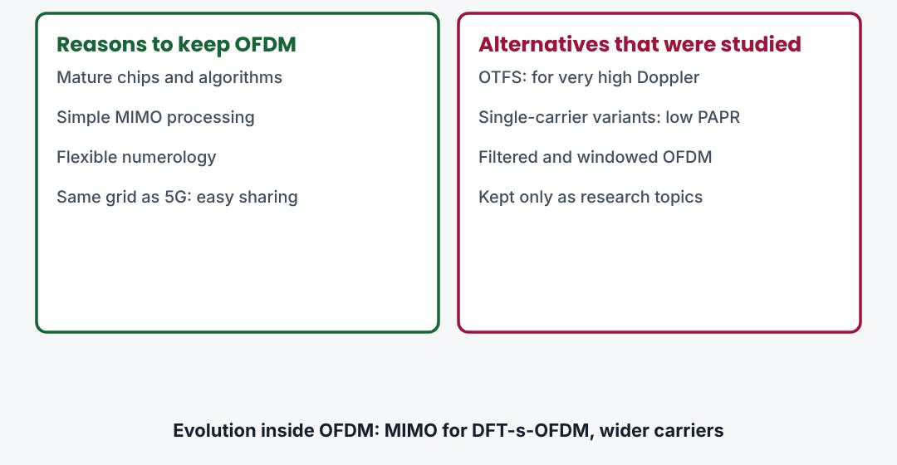
Many new waveforms were proposed for 6G. OFDM was kept because it is well understood, works naturally with MIMO, and makes it easy to share a carrier with 5G. Its weaknesses are known and manageable. A new waveform would have had to be much better to justify the cost of change.
4.3More antennas, larger arrays
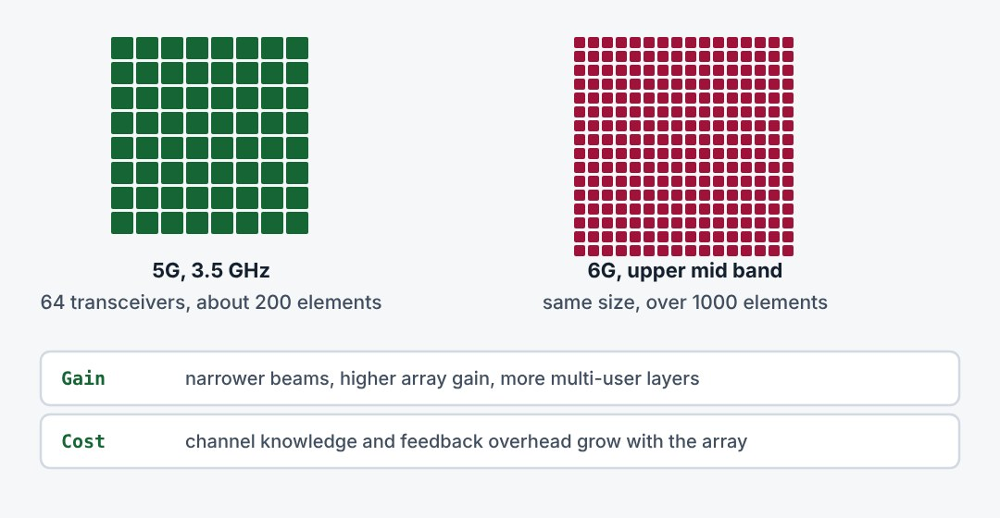
The new upper mid band makes very large arrays practical. Where 5G base stations use 64 transceivers and a few hundred elements, 6G arrays may have more than a thousand elements. Beams get narrower, more users can be served on the same resources, and the array gain supports the higher frequency.
4.4Near field and extra-large MIMO
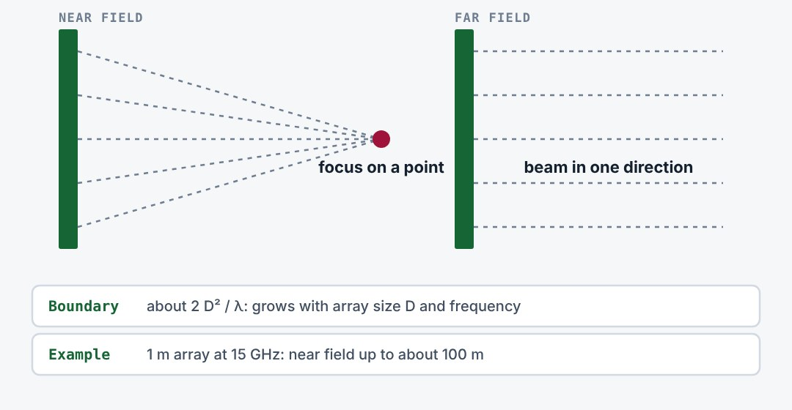
With very large arrays and high frequencies, users can be inside the near field of the antenna. There the wavefront is curved, not flat. Beams can then be focused on a point in distance as well as direction. This helps to separate users but needs new channel models and codebooks.
4.5Reconfigurable intelligent surfaces
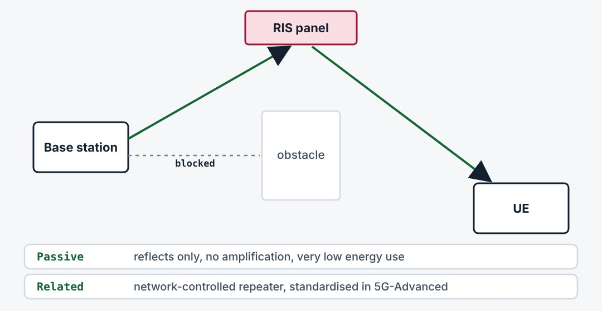
A reconfigurable intelligent surface is a panel of many small elements that reflect radio waves with a controllable phase. It can steer a reflection around an obstacle towards a user. It has no power amplifier, so it is cheap to run. Open questions are how to control it and how much it helps in real deployments.
4.6Duplex evolution
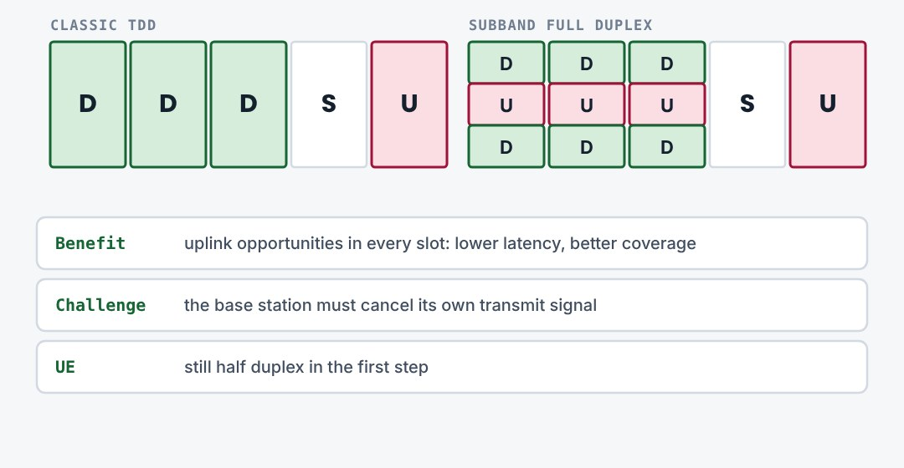
Today a TDD carrier is either in downlink or in uplink at a given time. Subband full duplex, introduced in 5G-Advanced, lets the base station receive in one part of the carrier while it transmits in the rest. This shortens uplink delay and improves coverage. 6G studies build on it.
4.7Lean, energy-aware design
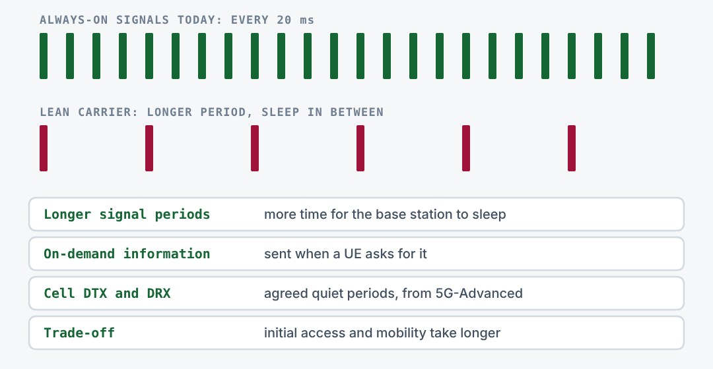
A 5G cell transmits reference and broadcast signals all the time, even with no users. 6G aims to send less when idle. Options under study are longer periods between synchronisation signals, system information on demand and deeper sleep modes for the base station.
4.8Three things to remember
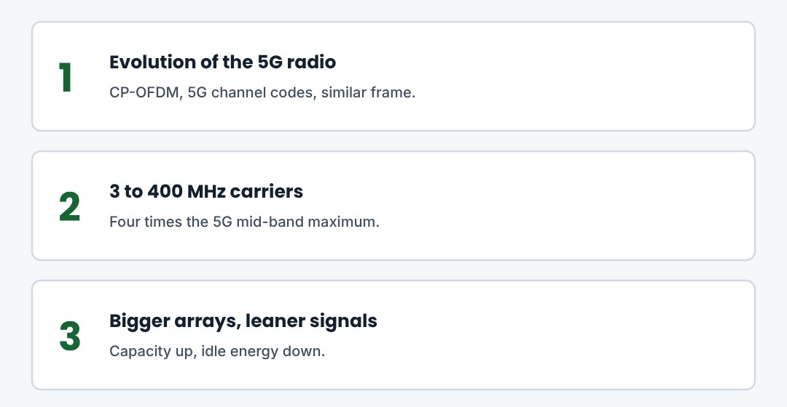
OFDM, LDPC and Polar continue. The gains come from wider carriers, larger arrays and smarter use of time and energy.
5. AI-Native Networks
What “AI-native” means for 6G: AI inside the radio, in the management of the network, and as a service the network supports.
5.1Three roles of AI
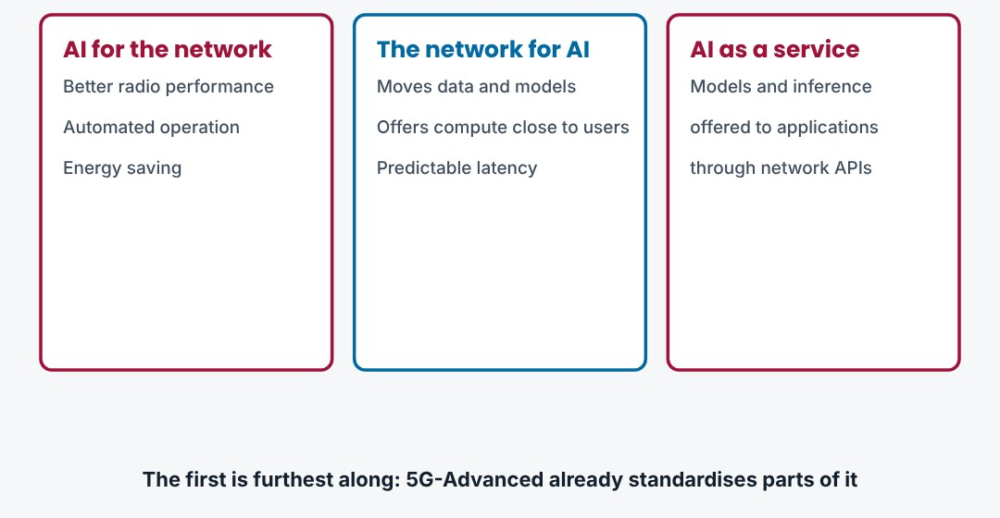
AI appears in 6G in three ways. It improves the network itself, for example in beam management. The network in turn supports AI applications with data, computing and reliable transport. And AI functions may be offered to customers as a service. “AI-native” means these are designed in from the start and not added on top.
5.2Where AI enters the radio
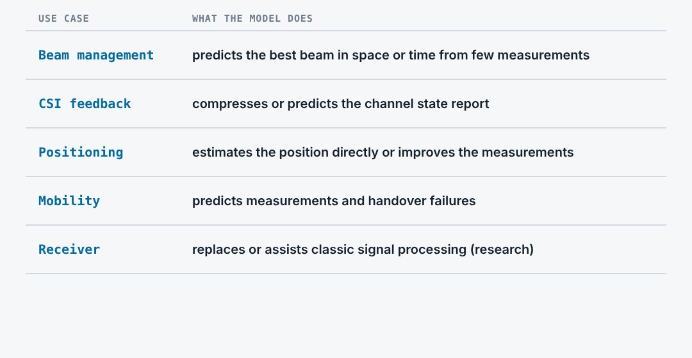
3GPP started with three use cases in the 5G-Advanced radio. A model predicts the best beam from a few measurements, compresses the channel state report, or improves positioning. Release 19 made the first of these normative. They are the starting point for the 6G work.
5.3One-sided and two-sided models
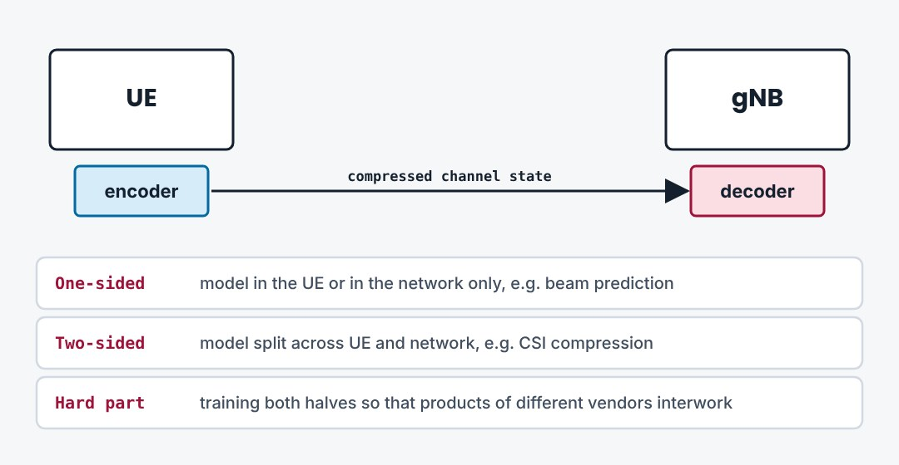
Some models run in one place, in the UE or in the base station. They are the simpler case. Two-sided models are split: an encoder in the UE compresses information and a decoder in the network restores it. The two halves may come from different vendors, so they must be trained to work together.
5.4Life cycle management
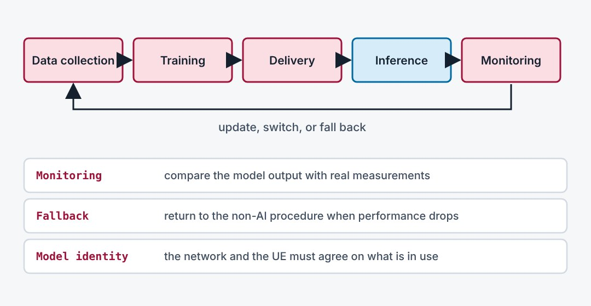
A model is never finished. Data must be collected, the model trained, delivered, switched on and watched. When radio conditions change and the model gets worse, the system must notice and fall back to the classic method. Standardising this life cycle is the larger part of the AI work.
5.5AI in the core and in operations
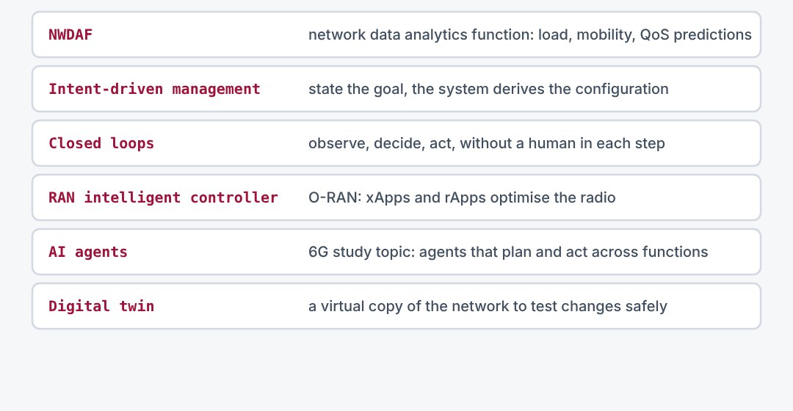
Beyond the radio, AI helps to run the network. In the 5G core the analytics function collects data and predicts load or mobility. Management systems move from scripts to intents: the operator states a goal and the system works out the configuration. 6G studies extend this towards AI agents.
5.6The network as a platform for AI
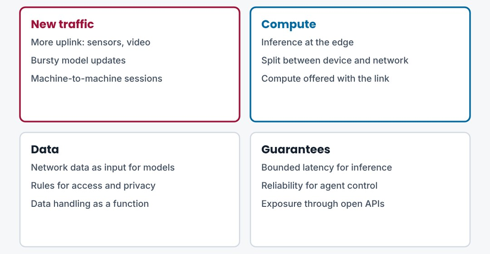
AI applications also change what the network must deliver. Traffic becomes more uplink-heavy when devices send sensor data and video to models. Models and their updates must be moved around. Computing is needed close to the user. 6G treats computing and data as resources next to connectivity.
5.7Open problems
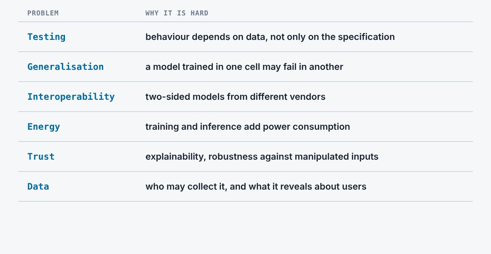
AI brings problems that classic radio features do not have. A model’s behaviour depends on its training data, so testing it is hard. Results can differ between vendors. Training and inference cost energy. And decisions must be explainable enough for operators and regulators to trust them.
5.8Three things to remember
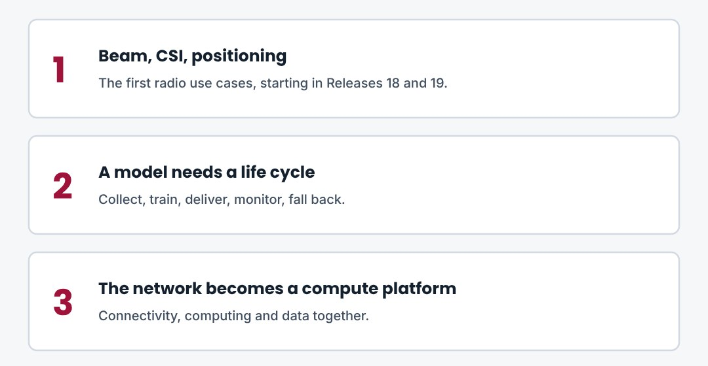
AI for the network, the network for AI. The first steps are already in 5G-Advanced. Life cycle management and testing are the hard parts.
6. Integrated Sensing and Communication
Using the mobile network as a radar: how it works, what it can detect and what limits it.
6.1The idea
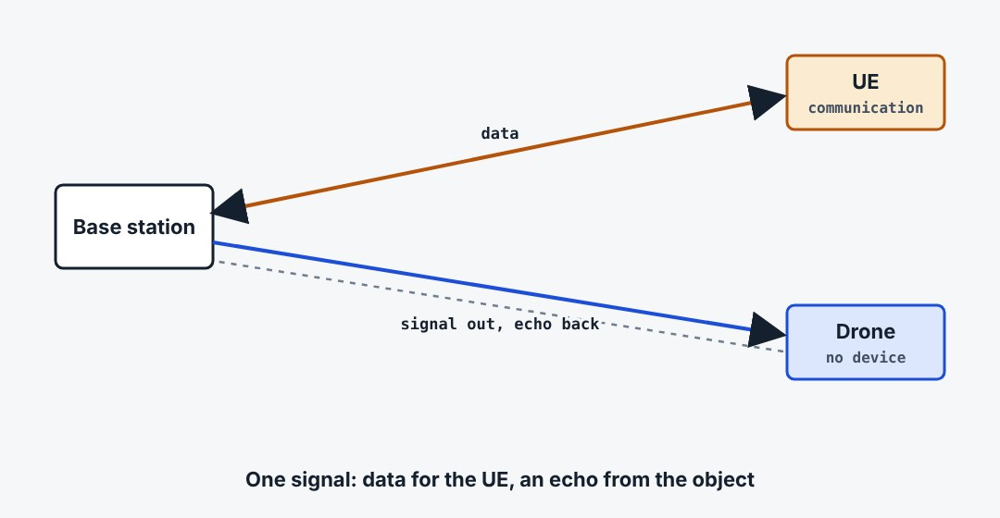
A base station already sends radio signals in all directions. Those signals are reflected by cars, drones, people and buildings. If the network analyses the reflections, it can detect and track objects that carry no device at all. The same spectrum, the same hardware and the same signal serve both purposes.
6.2Six sensing modes
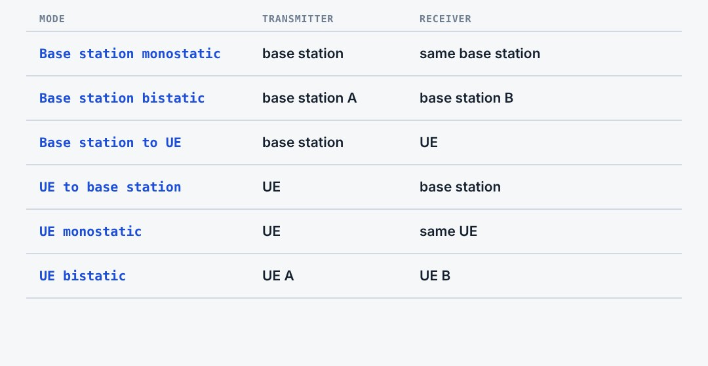
Sensing is classified by who transmits and who receives. If the same node does both, it is monostatic. If they are different nodes, it is bistatic. With base stations and UEs in either role, 3GPP distinguishes six modes. The first 6G work concentrates on the ones that involve base stations.
6.3What can be sensed
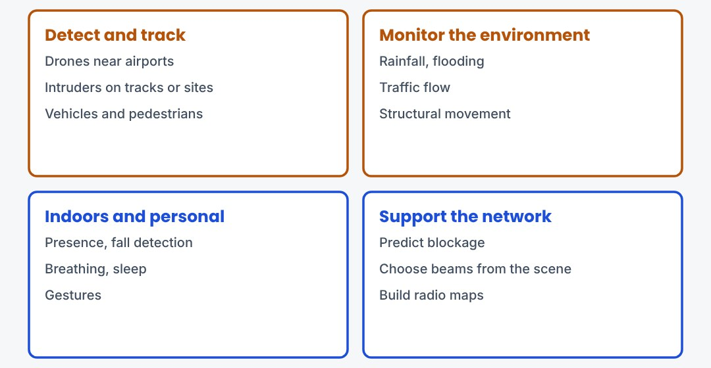
The requirements work collected dozens of use cases. They fall into a few groups: detecting intruders or drones, monitoring roads and railways, measuring weather, recognising gestures and monitoring health indoors. Each has its own needs for accuracy, range and update rate.
6.4What limits the accuracy
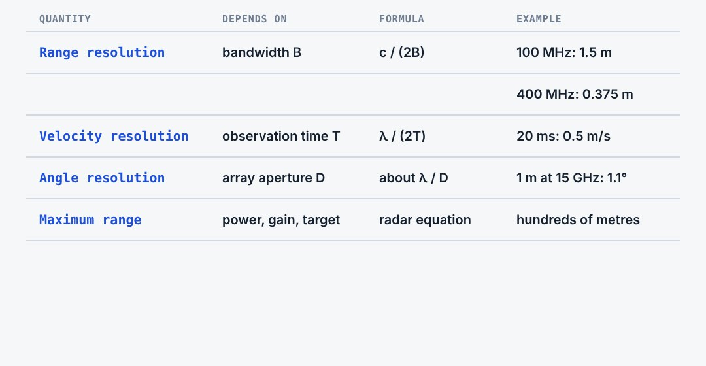
Radar physics sets the limits. Range resolution depends on the bandwidth: wider carriers separate objects that are closer together. Velocity resolution depends on how long the object is observed. Angle resolution depends on the size of the antenna array. Wider 6G carriers and larger arrays help all three.
6.5Reusing the communication signal
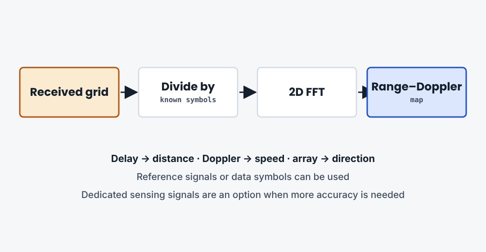
OFDM is also a good radar waveform. The receiver knows the transmitted symbols, divides them out and is left with the channel. A delay shows up as a phase slope across subcarriers and a Doppler shift as a phase slope across symbols. Two FFTs turn the grid into a map of range and velocity.
6.6Sensing in the architecture
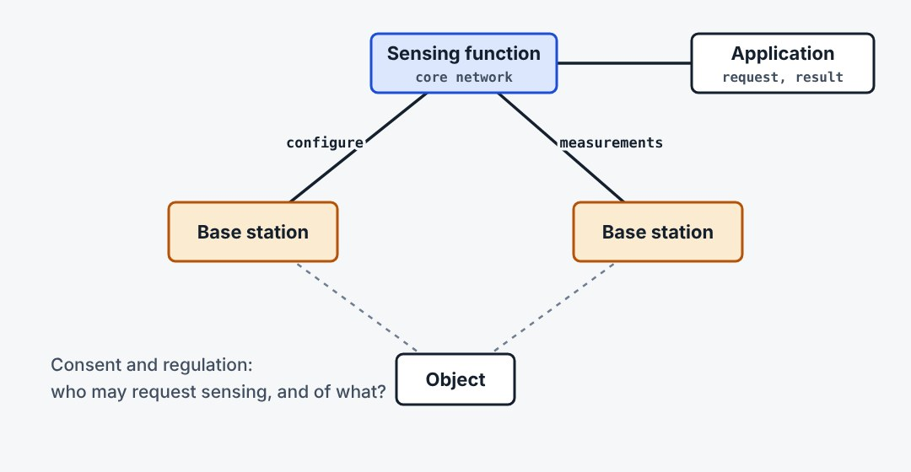
Sensing needs more than a radio feature. Something must accept a sensing request, pick the nodes that measure, collect the results and deliver them to the application. 3GPP studies a sensing function in the core for this. Privacy rules must cover people who are sensed without carrying a device.
6.7Hard problems
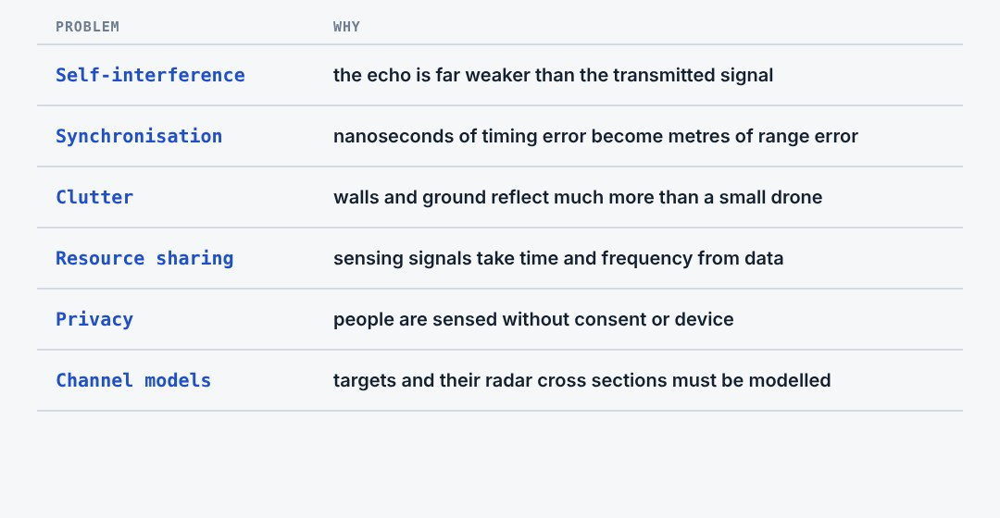
Several issues remain open. A base station that listens for echoes while transmitting must cancel its own strong signal. Bistatic sensing needs very accurate synchronisation between sites. Reflections from the static environment hide small targets. And sensing uses resources that data could have used.
6.8Three things to remember
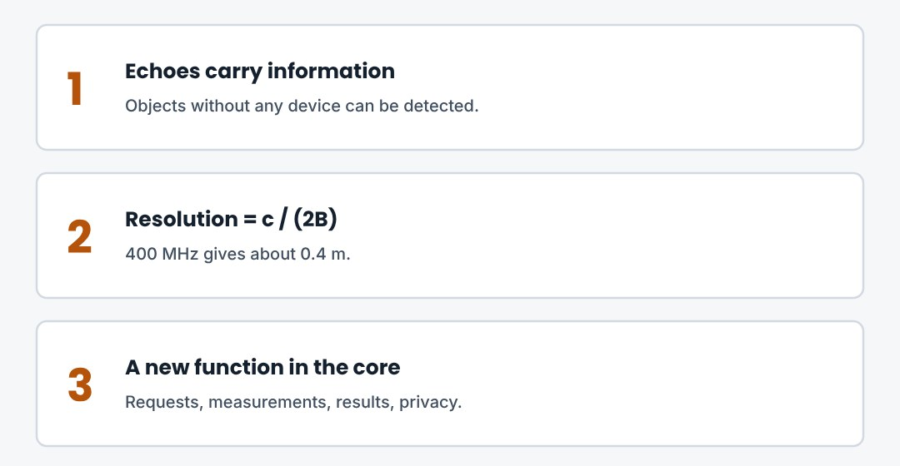
The network becomes a sensor. Bandwidth gives range resolution, the array gives direction. Privacy and self-interference are the open issues.
7. Architecture: RAN, Core and Cloud
How the 6G system is expected to be structured, what is carried over from 5G and how networks will migrate.
7.1Design principles
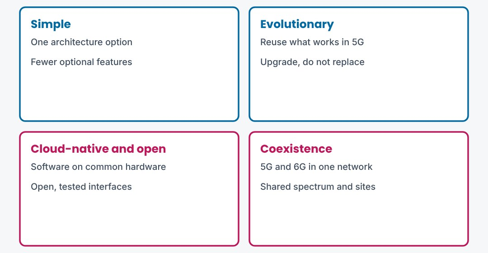
The architecture work starts from principles more than from new boxes. Keep it simple, with one main deployment option. Build on what works in 5G. Make it cloud-native and open. Let 5G and 6G coexist smoothly. Most operators want an evolution they can upgrade into, not a full replacement.
7.2The many options of 5G, and the one of 6G
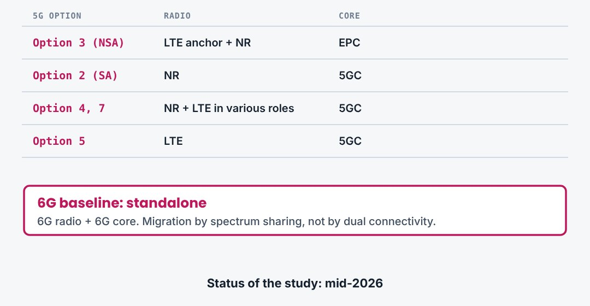
5G defined several ways to combine new and old radio and core. Most networks started non-standalone, with LTE as the anchor, and many took years to move on. The 6G baseline is standalone only: a 6G radio connected to a 6G-capable core, without dual connectivity to 5G.
7.3The radio access network
The 6G base station keeps the structure known from 5G. It can be one unit or be split into a central and a distributed unit. The interface towards the core stays a point-to-point interface. The split inside the radio unit, the lower-layer split, is left to the O-RAN ALLIANCE.
7.4The core network
For the core the main question is how much changes. The 5G core is already service-based and cloud-native. The study looks at how to extend it for 6G: new functions for sensing, computing and AI, simpler procedures and better resilience. A completely new core is not the starting assumption.
7.5Migration from 5G
Operators will introduce 6G into running 5G networks. Since dual connectivity is not the baseline, the tool is spectrum sharing: 5G and 6G use the same carrier and the split follows the traffic. Sites, transport and much of the core software can be reused.
7.6Cloud, edge and open RAN
6G assumes that network functions run as software on shared cloud infrastructure, from large data centres to small edge sites. Open interfaces let an operator mix vendors. An intelligent controller hosts applications that tune the radio. The same infrastructure can host AI workloads.
7.7Network digital twins
A digital twin is a software model of the live network, fed with real data. Changes can be tried on the twin before they reach customers. It also produces data to train AI models and helps to plan coverage for new bands. 6G studies treat it as a tool for operation.
7.8Three things to remember
One architecture option, standalone. The 5G structures continue in RAN and core. Migration relies on sharing spectrum with 5G.
8. Non-Terrestrial Networks
Satellites and high-altitude platforms as part of the mobile network: orbits, payload types and the radio challenges.
8.1Layers above the ground
A non-terrestrial network uses platforms in the sky as base stations or relays. Geostationary satellites cover a third of the Earth each but are far away. Low Earth orbit satellites are close and fast and need large constellations. High-altitude platforms fly in the stratosphere over one region.
8.2From add-on to native
Satellite support entered 3GPP step by step. Release 17 adapted NR and NB-IoT to work over satellites. Releases 18 and 19 improved coverage and mobility and added satellites that carry a full base station. For 6G the goal is one design that covers ground and space from the first release.
8.3Transparent and regenerative payloads
A transparent satellite only shifts and amplifies the signal: the base station stays on the ground. A regenerative satellite carries base station functions on board. That removes one leg of delay, allows links between satellites and lets the satellite serve areas where no ground station is in view.
8.4What is hard about satellite radio
Three effects dominate. The delay is far larger than any terrestrial cell and differs across the beam. A low orbit satellite moves so fast that the Doppler shift is tens of kilohertz. And the cells move over the ground, so every UE is handed over every few minutes even when it stands still.
8.5Direct to device
The most visible use is a normal phone that connects to a satellite when no ground network is available. It can use satellite bands or, with agreement of the regulator and operator, terrestrial mobile bands. Link budgets are tight, so the first services are messaging and low-rate data, with voice and broadband following.
8.6One network, ground and space
In 6G the satellite part should not be a separate system. The same radio design, the same core and the same subscription cover both. A device moves between terrestrial and satellite cells like between two normal cells. Planning, spectrum use and interference must then be coordinated across both.
8.7Use cases
Satellites will not replace ground networks: capacity per square kilometre is far lower. Their value is reach. They cover oceans, deserts and mountains, connect ships, aircraft and remote machines, and keep a minimum service alive when a disaster destroys the ground network.
8.8Three things to remember
Orbit sets delay and speed. The payload can relay or host the base station. 6G aims at one design for ground and space.
9. Ambient IoT, Energy and Sustainability
Devices without batteries, networks that sleep, and energy as a design requirement.
9.1The range of IoT devices
Mobile IoT now spans several classes. RedCap is a reduced 5G device for wearables and sensors. LTE-M and NB-IoT serve low-rate devices for years on one battery. Ambient IoT goes one step further: devices so simple that they need no battery at all. 6G is meant to support the whole range from its first release.
9.2Ambient IoT: no battery
An ambient IoT device takes its energy from the surroundings: radio waves, light, heat or motion. Many do not generate a carrier of their own. They reflect a signal sent by the network and modulate the reflection, called backscatter. That keeps power consumption in the range of microwatts.
9.3What ambient IoT is for
The target is objects that are too cheap, too many or too hard to reach for a battery device. Examples are pallets and parcels in logistics, stock in a warehouse, tools in a factory and sensors sealed inside structures. Release 19 specified a first indoor inventory use; 6G is to include it natively.
9.4Where the energy goes in a network
Most of a mobile network’s electricity is used in the radio access network, and there mostly in the power amplifiers and the always-on signals. A base station consumes a large share of its peak power even when it carries no traffic. So the first lever is to do less when idle.
9.5Energy-saving techniques
Savings come in four domains. In time, the cell transmits less often. In frequency, carriers are switched off when load is low. In space, antenna elements are muted. In power, the output is reduced. 5G-Advanced introduced several of these, and 6G builds them into the basic design.
9.6Energy efficiency as a requirement
IMT-2030 lists sustainability as a capability and as an overarching principle. For the network that means two things: energy per bit must fall as traffic grows, and absolute consumption at low load must fall too. 3GPP studies energy as a metric that the network measures, reports and can use as a service criterion.
9.7Device energy
Battery life matters as much as network energy. A device spends most of its time waiting. A low-power wake-up receiver lets the main radio sleep completely until the network sends a simple wake-up signal. For IoT, long sleep cycles and small signalling loads decide whether a battery lasts ten years.
9.8Three things to remember
IoT in 6G reaches down to battery-free tags. Network energy is mostly a radio and an idle-time problem. Sustainability is now a requirement, not a side effect.
10. Security, Privacy and Resilience
What 6G inherits from 5G security, what changes with quantum computers, AI and sensing, and what resilience means.
10.1The 5G security baseline
6G does not start from zero. 5G already hides the subscriber identity on the air, authenticates in both directions, can protect the integrity of user data and secures the interfaces between operators. The 6G work keeps these and looks at what new capabilities and new threats require.
10.2New threats
Three developments change the picture. Quantum computers could one day break the public-key methods used today. AI models bring their own weaknesses, such as poisoned training data. And a network that senses, runs in open clouds and includes satellites has a larger attack surface.
10.3Post-quantum cryptography
The answer to the quantum threat is new public-key algorithms that quantum computers are not expected to break. NIST published the first standards in 2024. Mobile networks use public-key methods to conceal the identity and in TLS and IPsec. Symmetric algorithms stay but move to 256-bit keys.
10.4Zero trust
Earlier generations trusted everything inside the operator network. With cloud platforms and many suppliers that assumption no longer holds. Zero trust means that every request between functions is authenticated and authorised, access is limited to what is needed, and behaviour is monitored continuously.
10.5Privacy in a sensing, AI-driven network
6G raises privacy questions that go beyond subscribers. Sensing can detect people who carry no device and never agreed to anything. AI needs data that may reveal behaviour. Very precise positioning shows where a person is to within centimetres. Rules for consent, purpose and access have to be part of the design.
10.6Resilience
Resilience means that the network keeps delivering an acceptable service when something goes wrong, and recovers quickly. Causes can be a software fault, a power cut, a natural disaster or an attack. IMT-2030 names it as a capability. Satellites, spare capacity and the ability to isolate a faulty part all contribute.
10.7Trust in AI decisions
When AI controls parts of the network, security includes the models themselves. Training data must be protected against manipulation. Models must be checked before use and watched while they run. And for important decisions a human or a rule-based function must be able to overrule the model.
10.8Three things to remember
The 5G security architecture continues. Cryptography moves to post-quantum and 256-bit. Privacy for sensing and trust in AI are new topics.
11. Roadmap, and What to Prepare For
The 3GPP and ITU schedule up to the first networks, and the skills a test engineer will need.
11.1The 3GPP schedule
3GPP works in two steps. Release 20 studies 6G and, in parallel, completes 5G-Advanced. Release 21 writes the first 6G specifications. The timeline approved in June 2026 puts the final stage 3 freeze in December 2028 and the last code freeze in March 2029.
11.2How 3GPP and the ITU fit together
The two schedules interlock. The ITU opens the window for candidate technologies in 2027. 3GPP submits a description of its 6G radio, first as a preliminary version and then completed with the Release 21 specifications. Evaluation follows, and the ITU approves the IMT-2030 specifications in 2030.
11.3Decided, emerging, open
It helps to sort what is known. Some radio basics are agreed in the study. Other topics have a clear direction but no detail. And for several the outcome is open, especially spectrum and the details of sensing and AI. Anything can still change until Release 21 is frozen.
11.4From 5G-Advanced to 6G
Many 6G features do not appear suddenly. They start in 5G-Advanced and continue. An engineer who works with Releases 18 and 19 today is already learning the first version of what 6G will make native.
11.5What changes for testing
New capabilities need new test methods. Radio tests at 7 to 15 GHz with large arrays are done over the air, without cables. AI features cannot be verified against a fixed expected output. Sensing needs targets and scenes that can be reproduced. Satellite links need emulation of delay and Doppler.
11.6Skills worth building now
You do not have to wait for the specifications. The foundations of 6G are known. Solid knowledge of the 5G standalone system comes first, because 6G evolves from it. On top come the basics of machine learning, radar signal processing, satellite links and cloud platforms.
11.7How to follow the work
The process is public. 3GPP publishes meeting reports, technical reports and the work plan. The ITU publishes the IMT-2030 documents. Reading the summaries after each plenary meeting is the most efficient way to stay current, and the Release 20 technical reports will hold the detailed study results.
11.8Three things to remember
Specifications at the end of 2028, networks around 2030. Much of 6G starts in 5G-Advanced. The best preparation is deep 5G knowledge plus AI, sensing and cloud basics.